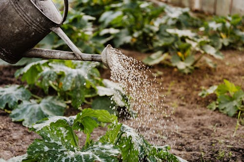
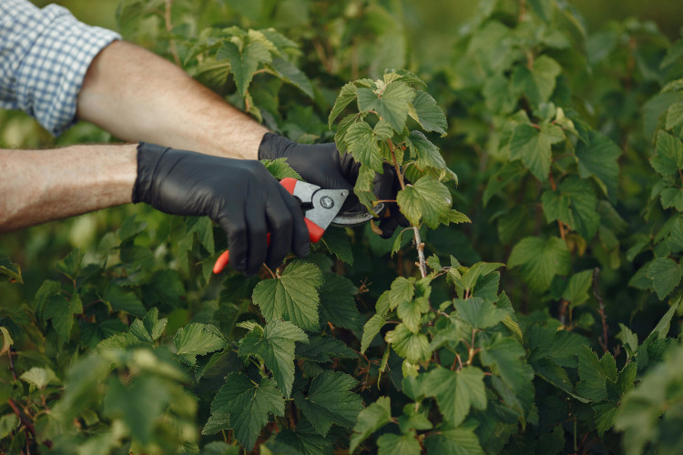

Como plantar rosas do deserto
Olá amantes da natureza! Imagine uma planta que combina a delicadeza das flores com a robustez de um cacto. Essa é a Rosa do Deserto, uma espécie única que conquista corações com suas cores vibrantes e formas impressionantes. Seja você um jardineiro experiente ou alguém que está começando a explorar o mundo das plantas, a Rosa do Deserto é uma escolha perfeita para trazer vida e beleza ao seu ambiente.
Aqui, você vai encontrar um passo a passo completo para cultivar e cuidar da sua Rosa do Deserto, desde o plantio até os cuidados diários que garantem uma planta saudável e cheia de flores. Com dicas práticas e informações essenciais, você vai descobrir que cuidar dessa maravilha da natureza é mais simples do que parece. Vamos lá?
Materiais necessários
- Sementes ou muda de Rosa do Deserto
- Vaso com furos de drenagem (preferencialmente de cerâmica ou barro)
- Substrato bem drenável (mistura de areia grossa, perlita e terra vegetal)
- Pedriscos ou cascalho para o fundo do vaso
- Adubo orgânico (húmus de minhoca ou composto)
1.Escolha do local para plantio
É possível plantar rosas do deserto no jardim normalmente porém recomendo fortemente que o plantio seja feito em um vaso para evitar complicações como a necessidade de proteção da planta contra a chuva que pode deixar o solo encharcado, em um vaso esse problema é facilmente resolvido com o transporte do vaso para um local adequado.
Se decidiu plantar em um vaso é importante escolher um que possua uma boa drenagem pois a planta não tolera solo encharcado. Vasos de cerâmica ou barro são uma ótima opção já que são porosos e ajudam a drenar a água em excesso, vasos plásticos támbem são uma boa opção mas deve ter furos no fundo para que não acumule umidade excessiva.
Mudas jovens (até 6 meses): Tamanho do vaso: 10 a 15 cm de diâmetro. Profundidade: 10 a 15 cm.
Mudas intermediárias (6 meses a 1 ano): Tamanho do vaso: 15 a 20 cm de diâmetro. Profundidade: 15 a 20 cm.
Mudas mais velhas (acima de 1 ano): Tamanho do vaso: 20 a 30 cm de diâmetro. Profundidade: 20 a 25 cm.
2.Peparação do Substrato
- Terra vegetal (ou substrato orgânico) – 40%
- Areia grossa (ou areia de construção lavada) – 30%
- Perlita ou vermiculita – 20%
- Húmus de minhoca (opcional, para nutrição) – 10%
- Carvão vegetal triturado (opcional, para evitar fungos) – uma pequena quantidade
3.plantio
Se for usar sementes:
Deixe as sementes de molho em água morna por 2-3 horas para acelerar a germinação (Pode usar um copo plástico com água e jogar as sementes dentro sem afunda-las).
Prepare o vaso com a mistura de substrato e faça pequenos buracos de cerca de 1 cm de profundidade.
Coloque 1-2 sementes em cada buraco e cubra levemente com o substrato.
Regue com um borrifador para manter o solo úmido, mas não encharcado.
Cubra o vaso com plástico filme para criar um efeito estufa e acelerar a germinação. Retire o plástico quando as sementes germinarem (em 7-15 dias).
Se for usar muda:
Coloque uma camada de pedriscos ou cascalho no fundo do vaso para melhorar a drenagem. Adicione parte do substrato preparado no vaso.
Posicione a muda no centro do vaso, tome cuidado para não danificar as raízes. Complete com o substrato, deixando a base do caule (a parte mais grossa) levemente acima do solo, isso é importante pois o caule de algumas plantas não são resistentes contra microorganismos do solo.
Regue levemente para firmar o solo.
Cuidados essenciais com a rosa do deserto
1.Iluminação
A Rosa do Deserto adora sol! Ela precisa de pelo menos 6 horas de luz solar direta por dia. Coloque-a em um local bem iluminado, como uma varanda, janela ou jardim.
2.Rega
A rega deve ser moderada. A Rosa do Deserto é uma planta suculenta e armazena água em seu caule. Regue apenas quando o solo estiver completamente seco. No verão, isso pode ser 1-2 vezes por semana; no inverno, reduza para 1 vez a cada 10-15 dias.
Evite molhar as folhas e flores para prevenir fungos.
3.Adubação
Use um adubo específico para plantas suculentas ou cactos, rico em fósforo e potássio, para estimular a floração.
Adubos orgânicos:
São derivados de materiais naturais e liberam nutrientes de forma lenta e gradual. São ideais para melhorar a estrutura do solo e fornecer nutrientes de forma sustentável.
- Húmus de minhoca: Rico em nutrientes e microrganismos benéficos, melhora a textura do solo e a absorção de nutrientes.
- Torta de mamona: Fonte de nitrogênio, promove o crescimento das folhas e caules. Deve ser usado com moderação, pois o excesso pode prejudicar a planta.
- Bokashi: Composto orgânico fermentado, rico em nutrientes e microrganismos que ajudam no desenvolvimento da planta.
- Farinha de osso: Rica em fósforo, estimula o desenvolvimento das raízes e a floração.
Adubos químicos(mineral):
São formulados com nutrientes específicos e de rápida absorção. Podem ser encontrados em formatos como granulados, líquidos ou em pó.
NPK (Nitrogênio, Fósforo, Potássio):
- NPK 10-10-10: Balanceado, ideal para uso geral.
- NPK 4-14-8: Com maior teor de fósforo, estimula a floração e o desenvolvimento das raízes.
- NPK 20-20-20: Para crescimento vigoroso, mas deve ser usado com cuidado para evitar excesso de nitrogênio.
Fertilizantes específicos para cactos e suculentas: Já são formulados com a proporção ideal de nutrientes para plantas como a rosa do deserto. Adube a cada 4-6 semanas durante a primavera e verão (época de crescimento). No outono e inverno, suspenda a adubação.

4.Poda
A poda é importante para manter a saúde e estética além de estimular o crescimento de novos galhos e flores.
Use uma tesoura esterilizada e corte os galhos secos ou muito longos. A poda deve ser feita no final do inverno ou início da primavera.
Se quiser dicas e saber mais sobre poda em plantas veja este vídeo do canal cultivando.
Pragas Comuns e Como Identificá-las
Cochonilhas:
Aspecto: Pequenos insetos brancos ou marrons, que parecem pequenas bolinhas de algodão.
Danos: Sugam a seiva da planta, causando enfraquecimento e deformações nas folhas e caules.
Locais: Encontram-se nas axilas das folhas, caules e raízes.
Pulgões:
Aspecto: Pequenos insetos verdes, pretos ou marrons, geralmente agrupados em brotos novos e folhas.
Danos: Sugam a seiva e podem transmitir vírus.
Locais: Brotos, folhas e flores.
Ácaros (ácaro-rajado):
Aspecto: Minúsculos e difíceis de ver a olho nu, mas deixam teias finas e manchas amareladas nas folhas.
Danos: Causam manchas e ressecamento das folhas.
Locais: Parte inferior das folhas.
Fungos (como o míldio ou oídio):
Aspecto: Manchas brancas ou cinzentas nas folhas e caules.
Danos: Podem causar apodrecimento e queda das folhas.
Locais: Folhas, caules e flores.
Como prevenir pragas
Evite encharcamento: Certifique-se de que o vaso tenha bons furos de drenagem e que o substrato seja bem drenável (mistura de areia, perlita e terra vegetal)
Local arejado: Mantenha a planta em um local bem ventilado, evitando ambientes abafados ou com pouca circulação de ar.
Remova folhas e galhos mortos: Folhas e galhos caídos podem acumular umidade e servir de meio para o desenvolvimento de fungos.
Pó de canela: Aplique pó de canela nos cortes após a poda ou em áreas suspeitas. A canela tem propriedades antifúngicas naturais.